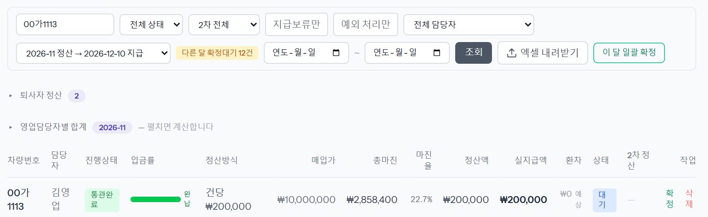
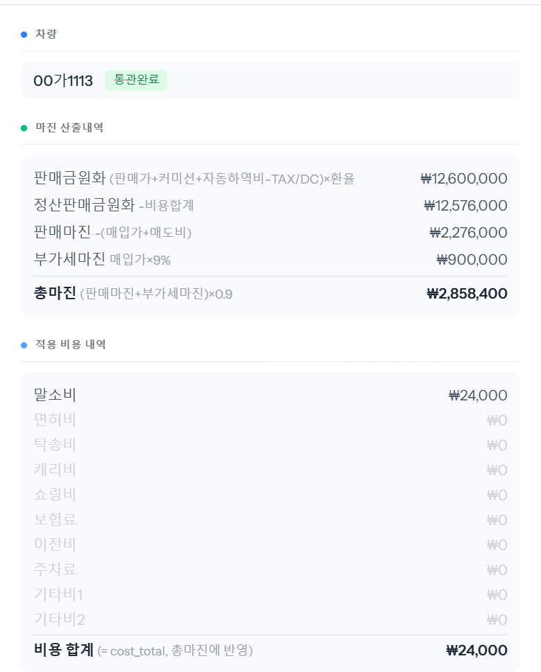
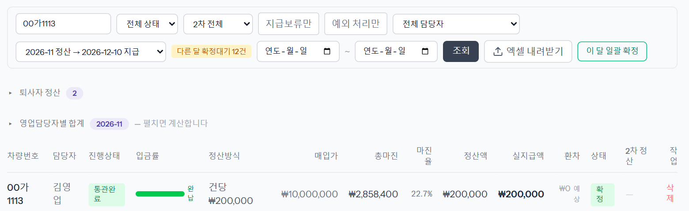
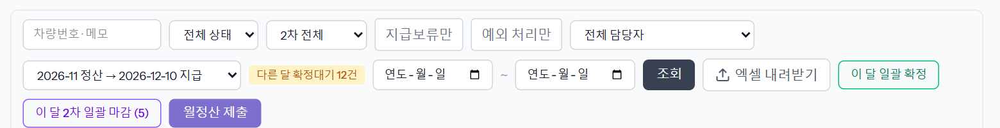
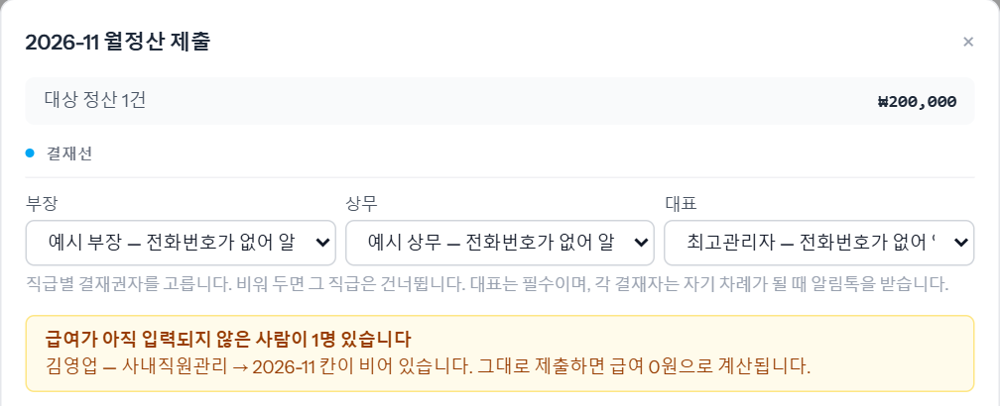
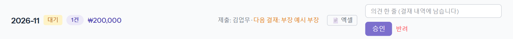
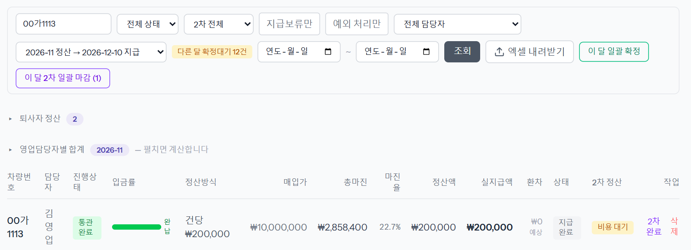
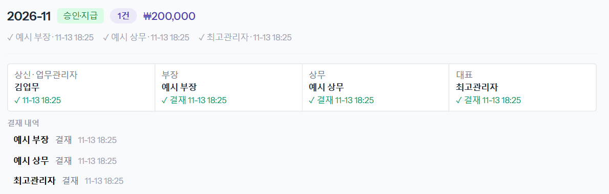
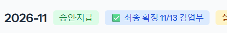

거래가 끝난 차의 담당자 정산을 한 달치 묶어 결재를 받고 지급까지 마치는 단계입니다. 재무가 정산을 확정하고, 업무관리자가 월정산을 올리고, 결재선(부장 → 상무 → 대표)이 승인한 뒤, 올린 사람이 최종 확정합니다.
판매 대금을 다 받았고 수출 탭에 인코텀즈(운임 조건)가 들어간 차는 정산이 저절로 「대기」로 생깁니다. 예시 차량은 판매 입금 때가 아니라 수출 탭에서 인코텀즈를 저장한 순간 생겼습니다. 왼쪽 메뉴 「정산 처리」에서 달을 고르고 차량번호로 찾습니다.

줄을 누르면 오른쪽에 「정산 수정」 창이 열리고 계산이 나옵니다. 예시 차량은 이렇습니다.

비용이 다르면 차량의 매입 탭 비용을 고친 뒤 다시 봅니다. 확인했으면 [취소]로 닫습니다.
줄 오른쪽 「작업」 칸의 [확정]을 누르고 확인하면 「정산이 확정됐습니다.」가 뜨고 상태가 「확정」으로 바뀝니다. 그 달 대기 정산을 한 번에 확정하려면 위 [이 달 일괄 확정]을 누릅니다.

업무관리자(또는 관리) 계정으로 「정산 처리」를 열면 달 칸 아래에 [월정산 제출]이 보입니다. 그 달의 확정된 정산이 한 번에 올라갑니다.

「2026-11 월정산 제출」 창이 뜹니다.

아래쪽에서 매입취소 손실을 차감하거나, 담당자별로 금액을 더하고 뺄 수 있습니다(사유 필수). 맨 아래 「최종 지급총액」을 확인하고 [월정산 제출]을 누르면 「월정산 제출됨 (1건). 승인큐에서 진행됩니다.」가 뜹니다.
※ 그림의 「전화번호가 없어…」는 예시 계정에 전화번호가 없어서 붙은 표시입니다. 전화번호가 있는 결재자는 이름만 보입니다.
차례가 된 결재자에게 이런 알림톡이 갑니다. 버튼을 누르면 내역을 보고 바로 승인·반려할 수 있습니다.
ERP 안에서는 왼쪽 메뉴 「사내직원 월정산」의 카드에서 합니다. 카드에 「대기 · 1건 · ₩200,000 · 제출: 김업무 · 다음 결재: 부장」이 보이고, 의견을 적고 [승인] 또는 [반려]를 누릅니다.

[승인]을 누르면 「이 배치를 승인합니까? (대표 최종 승인이면 전 정산이 즉시 지급 처리됩니다)」를 한 번 더 묻습니다. 부장이 승인하면 상무 차례, 상무가 승인하면 대표 차례로 넘어갑니다.
대표가 마지막으로 승인하면 그 월정산의 정산이 모두 「지급완료」가 되고, 2차 정산 칸에 「비용 대기」가 붙습니다(나중에 실제 비용을 넣어 마감하는 2차 정산이 남았다는 뜻).

「사내직원 월정산」에서 그 달 카드를 누르면 펼쳐집니다. 위에는 결재 진행(상신 · 부장 · 상무 · 대표 각각 결재 시각), 아래에는 사람별 줄이 있습니다.

사람별 줄에는 총마진·실지급액·회사이익·마진율이 보이고, 이번 달 지급을 미루거나 더할 때 [지급보류]·[지급추가]를 씁니다. 예시 김영업은 1대, 총마진 2,858,400, 실지급액 200,000입니다.
보류·추가를 다 적었으면 [✅ 월정산 최종 확정]을 누릅니다. 「이 월정산을 최종 확정할까요? 보류·추가를 더 적을 수 없고, … 엑셀은 확정본으로 나갑니다. 되돌릴 수 없습니다.」를 확인하면 「최종 확정했습니다. 엑셀을 받아 재무에 넘기세요.」가 뜹니다.
카드 제목에 「✅ 최종 확정 11/13 김업무」가 붙고, 보류·추가 장부가 잠깁니다. 카드 오른쪽 [엑셀]로 확정본을 받아 재무에 넘기면 재무가 송금합니다.
